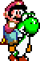

After the incredible success of the Super Mario Bros series on the Famicom, launching the Super Famicom in 1990 with Super Mario Bros 4 was a no brainer, and that's exactly what Nintendo did with Super Mario World. Dropping the "Bros" moniker in Europe and America, it was still officially named Super Mario World: Super Mario Bros. 4 over in Japan. Selling over 20 million copies (largely thanks to being a pack-in for a very popular console), it's one of the most successful games of all time. It topped out at #24 on the all time top sellers list of video games and outsold Super Mario Bros 3 by 2.6 million copies.

Shigeru Miyamoto has stated Super Mario World is his favorite Mario game. It took him and a team of 15 people three years to create it, and it shows. On the surface Super Mario World looks and plays very much like Super Mario Bros 3. But the differences are in the details, of which there are many in Super Mario World. The game houses a plethora of secrets, new enemies and game play mechanics. There's a certain love and passion in this game that few others can match, but sometimes you need to dig a bit to find it.

the basics
After saving the Mushroom Kingdom in Super Mario Bros 3, Mario, Luigi and Peach head to Dinosaur Island for a little vacation. It's not long after that Peach goes missing, and Luigi and Mario meet a strange dinosaur named Yoshi who tells them of bad happenings in the land. Bowser is imprisoning the Yoshies and is trying to conquer the land, and surely has something to do with Peach's disappearance. Mario is yet again summoned to save the day.
Super Mario World is a very standard Mario platformer. It's up to Mario to work his way through the levels, stomping enemies and gathering coins and items.
Much like Super Mario Bros 3, there is an overworld map showing the world of Dinosaur Land.

Super Mario World in many ways is a simpler game than its predecessor. I like Super Mario Bros 3 a lot (and miss some of its cool features), but in the end I do feel that Super Mario World is the better game. It has more personality, and more importantly, better platforming, which at the end of the day is what a Mario game is all about.
items and power ups
Mario games have lots of different items and power ups, and Super Mario World is no exception. All the suits that were introduced in Super Mario Bros 3 are gone, instead we simply have the standard mushroom, fire flower and a new feather. Not to mention Yoshi. The decrease in power ups can be seen as a negative, but both the feather and Yoshi are used very creatively and prove to be defining elements of the game.
Finding Secrets
Here is a good example of using the cape to access secret stuff. Notice the game gives no indication anything is up above, but it doesn't take long for players to start exploring the skies of most levels. Persistent players are often rewardedEither the cape or some form of Yoshi are usually needed to find secrets, as we'll talk about more later on in the secrets section.
Item Breakdown
Let's take a closer look at some of the items available in the gamemusic
We can't talk about Super Mario World without considering its music. The Super Famicom was a flying leap forward in audio quality from its predecessors and most of its competition. The Sega Megadrive and NEC PC Engine both launched before it, and in both cases more attention was paid to improving the graphics and overall power of the system, and sound capabilities were only modestly improved over previous generation consoles. Of the 16 bit generation, only SNK's Neo Geo could really complete with the Super Famicom in this department. letting the world know of this rich sound was an important task left to Super Mario World and its composer, Koji Kondo, at which they greatly succeeded.
Koji Kondo
Koji Kondo shares a similar footing to Shigeru Miyamoto in making the Nintendo universe memorable. He composed all the music for the Super Mario Bros games, as well as the music for Legend of Zelda, Punch Out!, Star Fox and many more. Mr. Kondo did not disappoint us with his music for Super Mario World, which is whimsical, fun, and simply a joy to listen to. The underground theme is one of my all time favorite video game tracks.
Tied Together
The four main background tunes (the first four in the music player) all share a common theme and melody. Each one being a slight variation on this melody. This common thread is pretty subtly done, it takes a while to start noticing it. It's a nice detail and helps make the music and game world more cohesive.
A Yoshi Touch
 A nice touch to most of the background music in Super Mario World involves riding on Yoshi. Whenever Mario is riding atop Yoshi, bongo drums get added to the music. You can hear the bongos in the second verse of the first four music tracks in the player down below.
Steel Drums
The above ground theme prominently features a steel drum. This instrument has gone on to be a common theme in Mario music, especially in Super Mario Sunshine on the GameCube and in beach themed tracks in the various Mario Karts. I can't help but think of Mario whenever I hear a steel drum being played.
The Classic Super Mario Bros Theme
It's in the game, but boy is it buried. To hear it, you'll need to unlock the Special map in the middle of Star Road. Once you're up there, the background music contains the classic theme. You need to wait a bit though, there is a pretty long intro. To hear it now, just pick the "special map" song from the music player down below.enemies
Taking place in Dinosaur Land means Super Mario World contains a large variety of new and interesting enemies. Most of the old classics returned (although goombas are a bit different), and there are many new faces to get to know too.
Koopa Troopas
The creators were sure to let the player know right away that koopas are badass in the game. The very first thing Mario encounters at the beginning of the game is a Koopa sliding down a hill coming after him. A nice added touch that clues the player in that they are about to embark on a really neat game.
Koopas in Super Mario World do so many different cool things, they warranted their own callout section ...
levels
An exit will either be the standard goal pole, or a keyhole which denotes a secret exit.
Sometimes secret exits are also goal poles, like this exit in Cheese Bridge Area
Exploring the Many Levels
But Super Mario World is definitely not lacking variety when looking across the various levels. Dinosaur Land offers all kinds of different places to explore.ghost houses
Ghost houses are where Super Mario World becomes more puzzlish and exploration oriented. Secret exits are common in ghost houses, and even finding the normal exit is usually not straightforward. P-Blocks are commonly used in ghost houses to reveal secret doors.
The ghost houses in Super Mario World are certainly simpler than in later games. Figuring them out usually doesn't take too much effort. Although the final ghost house in Bowser Valley has one of the most cleverly hidden exits in the entire game
An interesting secret in Donut Secret Ghost House is the Big Boo Boss. He is found guarding the house's secret exit. He's not very difficult to beat like all the bosses in the game, but he is a fun little bonus.
The Sunken Ghost Ship
yoshi
It wasn't until Yoshi's Island in 1996 that Yoshi's character and back story really unfolded. Here he gained his now distinct floaty jump and his ability to throw eggs at enemies. The Yoshi's Island series has gone on to two sequels, one being Yoshi's New island which just came out for the 3DS.
Yoshi has succeeded in winning everyone's hearts, and has been a staple character in the Nintendo universe ever since.

bowser and the koopalings
In standard Mario fashion, Bowser is the ultimate bad guy in Super Mario World. Also making an appearance are the Koopalings, who first debuted in Super Mario Bros 3. They are back in Super Mario World largely filling the same role: serving as the bosses of the various castles found throughout Dinosaur Land.
If I had any complaint against Super Mario World, it would be the bosses. They are just too easy and often a little bland. But to be fair, this is often the case in Mario games. Mario platformers are more about exploring and platforming, not taking on nasty boss battles. Even still, no boss in Super Mario World presents any kind of challenge, even Bowser himself. At least Bowser could have been a bit tougher.
Bowser works his way through three phases as you fight him. Miyamoto has always been fond of the number three when it comes to bosses. He has said if you can hit a boss three times, then the player has learned enough to consider the boss conquered. As expected, Bowser's defeat leads to Peach's rescue

and the game is concluded ...
secrets
But beating the game is not the real joy of Super Mario World. Finding all the secrets is.
Super Mario World is loaded with secrets, and they are well crafted. The secrets always operate within the constraints of the game, and never overly fool the player. Hints of things to come can be seen on the very first level
Soon after that you discover the first yellow switch palace, and immediately the game plants the notion of secrets in the player's mind
Upon returning to the level, the blocks are now present
Switch palaces are one major flavor of secret, and the other flavor is keys and keyholes. They go hand in hand, as unlocking certain color switches usually leads to keyholes. Although more advanced players can often find ways to access these areas without activating the switches.
Unlocked keyholes lead to secret exits from levels, sending Mario on all new paths and entire worlds to explore.
Star World
Special World
Autumn Enemies
In addition to the Autumn overworld map, four enemies get a new look. They just look different, no gameplay changes come with this bonus
|
Koopa
|
becomes Mask Koopa
|
|
Para Koopa
|
becomes Para Mask Koopa
|
|
Piranha Plant
|
becomes Pumpkin Plant
|
|
Bullet Bill
|
becomes Pidgit Bill
|
conclusion
And with that we're going to wrap up this exploration of Super Mario World. We hope you enjoyed reading it and had a nice burst of nostalgia.
Thank You!
Before going I want to thank Timby over at Mario Mayhem for letting me use his music files. Also thanks to Bryan for his input, and my wife Sarah for putting up with the creation of this monster. I also want to thank GitHub for hosting this monster :)
See you next time!